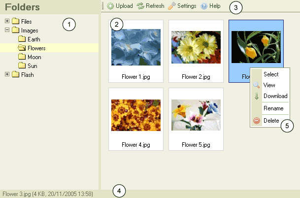

CKFinder-k瓣ytt繹liittym瓣n yleiskuva
CKFinderin k瓣ytt繹liittym瓣 on suunniteltu selke瓣ksi ja helposti opittavaksi.
Useimpia toimintoja voidaan k瓣ytt瓣瓣 hiiren ja pikavalikon avulla.
Kuvaruutukaappaus CKFinderista:

- Kansioruutu: kansioiden muodostama puurakenne.
Kansioiden avulla j瓣rjestell瓣瓣n tiedostoja.
- Tiedostoruutu: listaa kansiossa sijaitsevat tiedostot.
- Ty繹kalurivi: toiminto k瓣ynnistet瓣瓣n nappia painamalla.
- Tilarivi: tila, josta ilmenee tietoja valitusta tiedostosta,
tiedostojen lukum瓣瓣r瓣 kansiossa, jne.
- Pikavalikko: luettelo napeista, joilla voidaan k瓣ynnist瓣瓣
valittuun kohteeseen liittyvi瓣 toimintoja. Toiminnot vaihtuvat valitun kohteen tyypin mukaan.